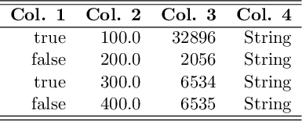
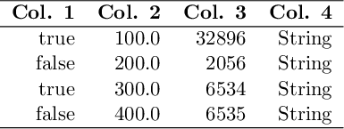

LaTeX back-end
The following options are available when the LaTeX backend is used. Those can be passed as keywords when calling the function pretty_table:
body_hlines: A vector ofIntindicating row numbers in which an additional horizontal line should be drawn after the row. Notice that numbers lower than 1 and equal or higher than the number of printed rows will be neglected. This vector will be appended to the one inhlines, but the indices here are related to the printed rows of the body. Thus, if1is added tobody_hlines, then a horizontal line will be drawn after the first data row. (Default =Int[])highlighters: An instance ofLatexHighlighteror a tuple with a list of LaTeX highlighters (see the section LaTeX highlighters).hlines: This variable controls where the horizontal lines will be drawn. It can benothing,:all,:noneor a vector of integers.- If it is
nothing, which is the default, then the configuration will be obtained from the table format in the variabletf(seeLatexTableFormat). - If it is
:all, then all horizontal lines will be drawn. - If it is
:none, then no horizontal line will be drawn. - If it is a vector of integers, then the horizontal lines will be drawn only after the rows in the vector. Notice that the top line will be drawn if
0is inhlines, and the header and subheaders are considered as only 1 row. Furthermore, it is important to mention that the row number in this variable is related to the printed rows. Thus, it is affected by filters, and by the option to suppress the headernoheader. Finally, for convenience, the top and bottom lines can be drawn by adding the symbols:beginand:endto this vector, respectively, and the line after the header can be drawn by adding the symbol:header.
InfoThe values of
body_hlineswill be appended to this vector. Thus, horizontal lines can be drawn even ifhlinesis:none.(Default =
nothing)- If it is
longtable_footer: The string that will be drawn in the footer of the tables before a page break. This only works iftable_typeis:longtable. If it isnothing, then no footer will be used. (Default =nothing)noheader: Iftrue, then the header will not be printed. Notice that all keywords and parameters related to the header and sub-headers will be ignored. (Default =false)nosubheader: Iftrue, then the sub-header will not be printed, i.e. the header will contain only one line. Notice that this option has no effect ifnoheader = true. (Default =false)row_number_alignment: Select the alignment of the row number column (see the section Alignment). (Default =:r)table_type: Select which LaTeX environment will be used to print the table. Currently supported options are:tabularfortabularor:longtableforlongtable. (Default =:tabular)tf: An instance of the structureLatexTableFormatthat defines the general format of the LaTeX table.vlines: This variable controls where the vertical lines will be drawn. It can be:all,:noneor a vector of integers. In the first case (the default behavior), all vertical lines will be drawn. In the second case, no vertical line will be drawn. In the third case, the vertical lines will be drawn only after the columns in the vector. Notice that the left border will be drawn if0is invlines. Furthermore, it is important to mention that the column number in this variable is related to the printed columns. Thus, it is affected by filters, and by the columns added using the variableshow_row_number. Finally, for convenience, the left and right border can be drawn by adding the symbols:beginand:endto this vector, respectively. (Default =:none)
LaTeX highlighters
A set of highlighters can be passed as a Tuple to the highlighters keyword. Each highlighter is an instance of the structure LatexHighlighter. It contains the following two fields:
f: Function with the signaturef(data,i,j)in which should returntrueif the element(i,j)indatamust be highlighted, orfalseotherwise.fd: A function with the signaturef(data,i,j,str)::Stringin whichdatais the matrix,(i,j)is the element position in the table, andstris the data converted to string. This function must return a string that will be placed in the cell.
The function f has the following signature:
f(data, i, j)in which data is a reference to the data that is being printed, i and j are the element coordinates that are being tested. If this function returns true, then the highlight style will be applied to the (i,j) element. Otherwise, the default style will be used.
Notice that if multiple highlighters are valid for the element (i,j), then the applied style will be equal to the first match considering the order in the Tuple highlighters.
If the function f returns true, then the function fd(data,i,j,str) will be called and must return the LaTeX string that will be placed in the cell.
If only a single highlighter is wanted, then it can be passed directly to the keyword highlighter without being inside a Tuple.
There are two helpers that can be used to create LaTeX highlighters:
LatexHighlighter(f::Function, envs::Union{String,Vector{String}})
LatexHighlighter(f::Function, fd::Function)The first will apply recursively all the LaTeX environments in envs to the highlighted text whereas the second let the user select the desired decoration by specifying the function fd.
Thus, for example:
LatexHighlighter((data,i,j)->true, ["textbf", "small"])will wrap all the cells in the table in the following environment:
\textbf{\small{<Cell text>}}If only a single highlighter is wanted, then it can be passed directly to the keyword highlighter without being inside a Tuple.
If multiple highlighters are valid for the element (i,j), then the applied style will be equal to the first match considering the order in the tuple highlighters.
If the highlighters are used together with Formatters, then the change in the format will not affect the parameter data passed to the highlighter function f. It will always receive the original, unformatted value.
julia> t = 0:1:20;
julia> data = hcat(t, ones(length(t))*1, 1*t, 0.5.*t.^2);
julia> header = ["Time" "Acceleration" "Velocity" "Distance";
"[s]" "[m/s\$^2\$]" "[m/s]" "[m]"];
julia> hl_v = LatexHighlighter( (data,i,j)->(j == 3) && data[i,3] > 9, ["color{blue}","textbf"]);
julia> hl_p = LatexHighlighter( (data,i,j)->(j == 4) && data[i,4] > 10, ["color{red}", "textbf"])
julia> hl_e = LatexHighlighter( (data,i,j)->(i == 10), ["cellcolor{black}", "color{white}", "textbf"])
julia> pretty_table(data, header, backend = :latex, highlighters = (hl_e, hl_p, hl_v))
The following LaTeX packages are required to render this example: colortbl and xcolor.
LaTeX table formats
The following table formats are available when using the LaTeX back-end:
latex_default (Default)

latex_simple
